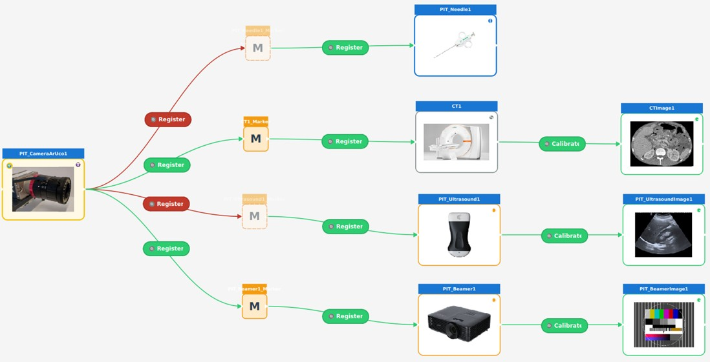

Fig. 1: single AR image target
Only the registration graph (Fig. 1) is tracked. The buttons on the phone alternate NDI Polaris / Monocular NIR without scanning another image.

Add the exact attached poster image to the repository root as fig1.jpg.
One-time image-target setup
- Upload the exact supplied Fig. 1 image as
fig1.jpgto the repository root. - Open the official MindAR compiler.
- Compile only this one image and download
targets.mind. - Rename the file to
fig1.mindand upload it to the repository root. - Open the AR demo on a phone, allow camera access, aim at Fig. 1 and switch trackers.
Use the exact same crop printed on the poster. A non-glossy print improves recognition.
Interactive 2D preview (works without the AR target). This preview does not test image recognition.